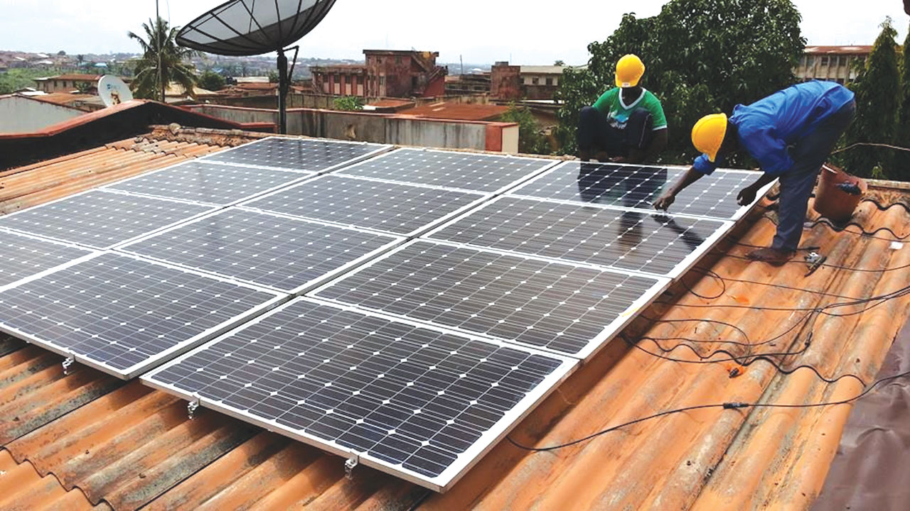
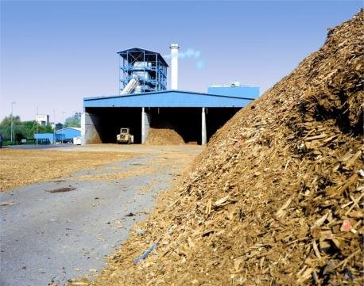

Nigeria is abundantly endowed not only in Crude Oil, Natural gas, Tar Sands, Nuclear Element, Coal and Lignite but also in renewable energy resources.
The challenges of the electricity industry in Nigeria are huge and complex but one way out is to employ renewable resources in power generation.
Renewable energy resources are grossly underutilized in the country despite their availability in reasonable quantities,
it is regrettable that Nigeria is yet to maximally exploit these enormous energy potentials with less environmental and climatic impacts.
Royal Energy Services gives an overview of renewable energy potentials in Nigeria;
the various renewable energy resources available in the country, such as, hydropower, Solar, Wind, Biomass and Biogas energy were highlighted,
others are geothermal, Hydrogen, Ocean, Tidal and Wave energy. Further, this piece talks about the prospects, challenges
and the way forward to ensure that renewable energy potentials available in the country is put to optimal use.
Non-conventional renewable energy is a key element in the overall strategy of the Federal Government of Nigeria in rapidly expanding access to electricity services in the country.
Beyond large hydropower, the total contribution of renewable energy in Nigeria’s electricity industry is about 35MW composed of 30MW small hydropower and about 5MW solar PV.
This represents about 0.06% of total electricity generating capacity in the country.
Potential of Renewable Energy Sources in Nigeria
Energy plays the most vital role in the economic growth, progress, and development, as well as poverty eradication and security of any nation.
Uninterrupted energy supply is a vital issue for all countries today. Future economic growth crucially depends on the long-term availability of energy from sources that are affordable,
accessible, and environmentally friendly. Nigeria is blessed with a large amount of renewable energy resources as tabulated in Table 1,
based on the resource situation and the technological base of the country,
the Policy Guideline focuses on hydropower, biomass co-generation, solar PV and wind energy for electricity production.
RENEWABLE ENERGY SOURCES IN NIGERIA
Resource Type
Reserves (Natural Units)
Production Level (natural units)
Utilization (natural units)
Hydropower, large scale
11,250 MW
1,938 MW (167.4 million MWh/day)
167.4 Million MWh/day
Hydropower, small scale
3,500 MW
30 MW (2.6 million 2.6 million MWh/day
2.6 million MWh/day
Solar Radiation
3.5 - 7.0 kWh/m2 /day (485.1 million MWh/day using 0.1% Nigeria land area)
Excess of 240 kWp of solar PV or 0.01 million MWh/day
Excess of 0.01million MWph/day of solar PV
Wind
(2-4) m/s at 10m height
Biomas
Fuel wood
11 million hectares of forest and Woodland
0.110 million tonnes/day
0.120 million tonnes/day
Animal waste
245 million assorted animals in 2001
0.781 million tonnes of waste/day in 2001
Energy drops and Agric Residue
72 million hectares of Agric Land and all waste lands
Excess of 0.256 million tonnes of assorted crops residues/day in 1996
Municipal Waste
-18.3 million tonnes in 2005 & about 30 million tonnes/yr now
Geothermal
6 sites
Wave and tidal energy
150,000 TJ/(16.6 × 106 toe/year)
Hydropower Energy Resources in Nigeria
Hydropower energy potential of Nigeria is high and it currently accounts for about 29% of the total electricity power supply in Nigeria.
The first and large hydropower supply station in Nigeria is located in kanji on the river Niger, in Niger State where it has an installed capacity of 836 MW and it also had provisions for more expansion to 1,156 MW.
The second largest hydropower station is located in Jebba, Niger state with an installed capacity of 540 MW, for rivers Shiroro in Kaduna State, Ikom in Cross River State and Makurdi in Benue state estimated their total capacity to about 4,650 MW.
The Mambila Plateau rivers estimate was put at 2,330MW.
The Gurara Dam Water Project is a multipurpose project for water supply, hydropower, irrigation and ancillary uses. It is Nigeria’s largest and pioneer water transfer scheme. The project is fully developed by the Federal Government of Nigeria.
It comprises a large dam, and a 75km tunnel through the Kaduna and Usuma basins of Kaduna State and the Federal Capital Territory (FCT). The dam is built on the Gurara River near Abuja, the capital of Nigeria.
Solar Energy Resources in Nigeria
Nigeria, situated approximately between 40 North and 130 North, with landmass of 9.24 x 10 5 km2 is endowed with an annual average daily sunshine of 6.25 hours, ranging between about 3.5 hours at the coastal areas and 9.0 hours
at the far northern boundary and an annual average daily solar radiation of about 5.25 kW/m2 /day at the coastal area and 7.0 kW/m2 /day at the northern boundary. Consequently, Nigeria receives about 4.851 x 1012 kWh of incident solar energy per day or an average of 1.804 x 1015 kWh annually.
This annual solar energy value is about 27 times the nation total conventional energy resources in energy units and it is over 117,000 times the amount of electric power generated in the country. The efficiency of the solar system depends on the intensity of the sun.
Higher current is generated when the solar panel is rotating than when it is stationary and placed at an inclined angle. Due to the movement of the earth relative to the sun, the direction or angle at which the rays reach the earth surface changes from sunrise to sunset and this greatly affects the intensity of radiation,
Solar manual tracking is introduced in order to move the panel in more than one direction, which involves human control in order to provide optimum solar energy at different time intervals. Solar energy has been utilized in Nigeria in various forms: namely, solar PV for rural electrification, solar cooker, solar crop dryer,
solar manure dryer, solar water pump, solar water heaters, solar chick brooders etc. Notable solar projects in Nigeria include: street lighting in Ado Ekiti, Ekiti State, 7.2kW Kwalkwalawa Village Electrification, Sokoto State and 1.87 kW Iheakpu-Awka Village Electrification/TV Viewing, Enugu State among others

Wind Energy Resources in Nigeria
The technologies for harnessing wind energy have, over the years, been tried in the northern parts of the country, mainly for water pumping from open wells in many secondary schools of old Sokoto and Kano States as well as in Katsina, Bauchi and Plateau States.
Other areas of “potential application” of wind energy conversion systems in Nigeria are in Green electricity (which is the type of electricity produced from renewable source that is environmentally friendly and non-polluting) production for the rural community and for integration into the national grid system.
Wind speed in Nigeria ranges from 1.4-3.0m/s in the southern areas and 4.0-5.12m/s in the extreme north. Wind speeds are generally weak in the southern part of the country except for the coastal regions and offshore location.
Initial study has shown that total exploitable wind energy reserve at 10m height may vary from 8MWh/yr in Yola to 51MWh/yr in the mountainous areas of Jos Plateau and it is as high as 97MWh/yr in Sokoto It also give a potential estimate for ten (10) selected sites in the country to be between 3.6 m/s to 5.4 m/s.
Biomass Energy Resources in Nigeria
Biomass resources in the country include Agricultural crops, wood, charcoal, grasses and shrubs, residues and wastes (agricultural, forestry, municipal and industrial), and aquatic biomass.
The proportion of biomass used for energy purpose is 34% in total of biomass production in Nigeria. A fuel-wood supply deficit of about 22% and 28% was projected for 2008 and 2010 respectively.
Biomass and waste make up 78% of total primary energy supply, Agricultural biomass harvest 0%, Electricity 0% and Heat 50%. It is unlikely that all agricultural biomass harvest is used for heat. A significant amount of corn husks, paddy husks, shells, etc are left to decompose on the farms.
In the absence of study data, a fair estimation would be 50%. However decreases in the availability of biomass in the country are likely due to the reduction in land area from sea level rise and flooding in the south, and droughts in the north. Ultimately it is unlikely that there will be a net increase in biomass.
Moreover, poor penetration and use of energy efficient biomass technologies would undermine any net gain

Geothermal Energy Resources in Nigeria
The widespread occurrence of geothermal manifestations in Nigeria is significant because the wide applicability and relative ease of exploitation of geothermal energy is of vital importance to an industrializing nation like Nigeria. There are two known geothermal resource areas (KGRAs) in Nigeria:
the Ikogosi Warm Springs of Ondo State and the Wikki Warm Springs of Bauchi State. These surficial effusions result from the circulation of water to great depths through faults in the basement complex rocks of the area. Within sedimentary areas, high geothermal gradient trends are identified in the Lagos sub-basin,
the Okitipupa ridge, the Auchi-Agbede area of the Benin flank/hinge line, and the Abakaliki anticlinorium. The deeper Cretaceous and Tertiary sequences of the Niger delta are geopressured geothermal horizons. In the Benue fold-belt, extending from the Abakaliki anticlinorium to the Keana anticline and the Zambuk ridge,
several magmatic intrusions emplaced during the Late Cretaceous line the axis of the Benue trough. Positive Bouguer gravity anomalies also parallel this trough and are interpreted to indicate shallow mantle. Parts of this belt and the Ikom, the Jos plateau, Bauchi plateau, and the Adamawa areas, experienced Cenozoic volcanism and magmatism.
Hydrogen Energy Resources in Nigeria
The non-renewable resources of Hydrogen in the country are primarily fossil fuels. While the available renewable resources of Hydrogen in Nigeria are – wind, which is mostly available in the northern parts of the country, solar of which the country has an average of 5.5 h of insolation daily, geothermal,
with resources found in the Ikogosi Warm Springs of Ondo State, Wikki Warm Springs in Bauchi State, the Lagos sub-basin, the Okitipupa ridge, the Auchi-Agbede within the Benin flank/hinge line and the Abakaliki anticlinorium
Ocean Energy Resources in Nigeria
Ocean Thermal Energy Conversion (OTEC) within about 25 degrees each side of the equator, the surface of an ocean in Nigeria is warmed and the depths are cold to the extent that there is a modest temperature differential. This can be a source of energy, using a low boiling point fluid such as ammonia,
which, at normal atmospheric temperature of 7000F (2400C) a gas, colder water can be pumped from the deep ocean to condense the ammonia and then let it warm up and expand to gas. The resulting gas pressure can power a turbine to turn a generator. But the plant would have to be huge and anchored in the deep open ocean or on a ship,
all subjects to storm and corrosion, and the amount of water which has to be moved is enormous as the efficiency is very low. How to store and transport the resulting electricity would also be a large issue. OTEC does not appear to have much potential as a significant energy source, but the end product is electricity.
This energy resource is vastly available in Nigeria, if managed and harnessed.
Tidal Energy Resources in Nigeria
It takes a special configuration and a high tide of a coastline and a narrow estuary which can be dammed, to be a tidal power site of value. Daming estuaries would have considerable environmental impact, like their abundance in Nigeria. Areas in southern part of the country have, for a long time considered places for tidal power sites.
Developing them would not have negative effect on the fisheries and other sea-related economic enterprises; rather it will not disturb the habitats of millions of birds which use the areas as part of their migration routes. Tidal power is not a significant power source, but the end product is electricity
Wave Energy Resources in Nigeria
All sort of installations have been tried to obtain energy from this source, but with modest results. This is Piston arrangements, moving up and down by waves, which in turn move turbines connected to electrical generators. This has been tried in the Netherlands.
Waves are prominent in the oceanic areas of Nigeria, though it is not dependable, but if properly harnessed, the end product is electricity. Producing electricity in significant quantities from
waves seems to be a remote and insignificant prospect in Nigeria
Prospects of Renewable Energy in Nigeria
The prospects of renewable energy in Nigeria are as follows:
Integrated Rural Village Energy Supply, IRVES: Renewable energy resources such as solar radiation, wind, small-scale hydropower and biomass are, in general, well distributed over the country.
The concept of the IRVES programme is to study the energy needs of a rural community for various socio-economic activities, the energy resources available to the community, energy related environmental problems, as well as the skills and trainability of its manpower.
An energy supply and consumption system for the village is then developed, utilizing the available energy resources, which are mostly renewable, to meet the identified needs in a sustainable way. Capacity building programmes and post-project management are provided for, to enhance sustainability.
Key features of the post-project management arrangements are: •Provisions for community participation in the management and •payment, by beneficiaries, for centrally provided energy services, to cover operation and maintenance costs
Rural Electrification: Distributed Power Supply Solar-PV, wind and micro-hydro systems have proved more cost-effective on a life-time basis, than grid electricity or diesel generators in situations where loads are low and far from the grid. The threshold distances depend on the technology,
power level and prevailing costs of equipment, fuel, electricity, operating and maintenance costs. The dotted nature and low power demand levels of rural load centres suggest the use of decentralised and small-scale power supply systems to which solar-PV, wind, micro-hydropower and other renewable energy power generators are adequately suited.
Deliberate policies and programmes are required to identify and implement the above concept in rural areas that are unlikely to be grid connected in the long term (15-20 years). This will require the joint participation of government, the private sector and consumers.
Alternatives to Fuel-wood :
The large scale and predominant consumption of fuel-wood has been identified as contributing significantly to the environmental problems of soil erosion and desertification. Other serious hazards include respiratory and visual disorders. There is great potential in alternatives to traditional fuel-wood based technologies.
The 1992 Presidential Task force on Alternatives to fuel-wood recommended the large scale introduction of biogas technology and solar cookers, (as well as the use of coal briquettes, natural gas and kerosene) in order to reduce the share of fuel-wood in the energy mix. Solar water heaters and improved wood stoves ought to be added to these set of technology.